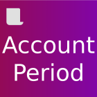
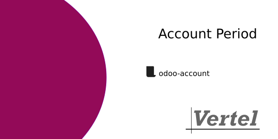

Divides the fiscal year into 12 months or 4 quarters.
Divides the fiscal year into periods — 12 months or 4 quarters — and adds period-aware accounting. Each period has a start and end date and a closing date, and can be closed to prevent further posting.
It adds period journals, balances per period, and integrates periods with bank statements, journal entries and MIS budgets.
Typical use: Use it when accounting must be reported and closed month by month or quarter by quarter.
A period model per fiscal year, with start, end and closing dates.
Journals can be tied to periods, with closing handling.
Account balances can be viewed per period.
Periods can be closed so no further entries are posted.
Bank statements are linked to periods.
Ships an onboarding template for setting periods up.


accountmis_builder_budgetRequires Odoo 18.0 or later.
Install the module account_period_vrtl from the Odoo Apps menu,
or deploy it via the Vertel SaltStack pipeline.
Vertel Sverige AB — vertel.se · info@vertel.se